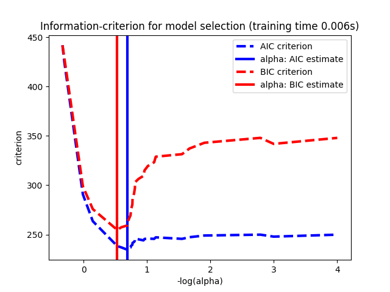
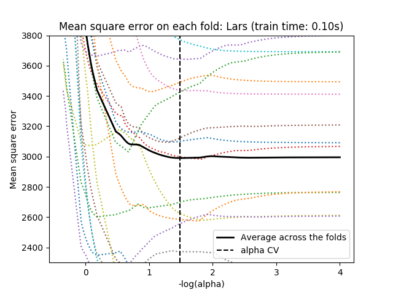

Note
Click here to download the full example code or run this example in your browser via Binder
Lasso model selection: Cross-Validation / AIC / BIC¶
Use the Akaike information criterion (AIC), the Bayes Information criterion (BIC) and cross-validation to select an optimal value of the regularization parameter alpha of the Lasso estimator.
Results obtained with LassoLarsIC are based on AIC/BIC criteria.
Information-criterion based model selection is very fast, but it relies on a proper estimation of degrees of freedom, are derived for large samples (asymptotic results) and assume the model is correct, i.e. that the data are actually generated by this model. They also tend to break when the problem is badly conditioned (more features than samples).
For cross-validation, we use 20-fold with 2 algorithms to compute the Lasso path: coordinate descent, as implemented by the LassoCV class, and Lars (least angle regression) as implemented by the LassoLarsCV class. Both algorithms give roughly the same results. They differ with regards to their execution speed and sources of numerical errors.
Lars computes a path solution only for each kink in the path. As a result, it is very efficient when there are only of few kinks, which is the case if there are few features or samples. Also, it is able to compute the full path without setting any meta parameter. On the opposite, coordinate descent compute the path points on a pre-specified grid (here we use the default). Thus it is more efficient if the number of grid points is smaller than the number of kinks in the path. Such a strategy can be interesting if the number of features is really large and there are enough samples to select a large amount. In terms of numerical errors, for heavily correlated variables, Lars will accumulate more errors, while the coordinate descent algorithm will only sample the path on a grid.
Note how the optimal value of alpha varies for each fold. This illustrates why nested-cross validation is necessary when trying to evaluate the performance of a method for which a parameter is chosen by cross-validation: this choice of parameter may not be optimal for unseen data.
- 
- 
Out:
Computing regularization path using the coordinate descent lasso...
Computing regularization path using the Lars lasso...
print(__doc__)
# Author: Olivier Grisel, Gael Varoquaux, Alexandre Gramfort
# License: BSD 3 clause
import time
import numpy as np
import matplotlib.pyplot as plt
from sklearn.linear_model import LassoCV, LassoLarsCV, LassoLarsIC
from sklearn import datasets
# This is to avoid division by zero while doing np.log10
EPSILON = 1e-4
X, y = datasets.load_diabetes(return_X_y=True)
rng = np.random.RandomState(42)
X = np.c_[X, rng.randn(X.shape[0], 14)] # add some bad features
# normalize data as done by Lars to allow for comparison
X /= np.sqrt(np.sum(X ** 2, axis=0))
# #############################################################################
# LassoLarsIC: least angle regression with BIC/AIC criterion
model_bic = LassoLarsIC(criterion='bic')
t1 = time.time()
model_bic.fit(X, y)
t_bic = time.time() - t1
alpha_bic_ = model_bic.alpha_
model_aic = LassoLarsIC(criterion='aic')
model_aic.fit(X, y)
alpha_aic_ = model_aic.alpha_
def plot_ic_criterion(model, name, color):
alpha_ = model.alpha_ + EPSILON
alphas_ = model.alphas_ + EPSILON
criterion_ = model.criterion_
plt.plot(-np.log10(alphas_), criterion_, '--', color=color,
linewidth=3, label='%s criterion' % name)
plt.axvline(-np.log10(alpha_), color=color, linewidth=3,
label='alpha: %s estimate' % name)
plt.xlabel('-log(alpha)')
plt.ylabel('criterion')
plt.figure()
plot_ic_criterion(model_aic, 'AIC', 'b')
plot_ic_criterion(model_bic, 'BIC', 'r')
plt.legend()
plt.title('Information-criterion for model selection (training time %.3fs)'
% t_bic)
# #############################################################################
# LassoCV: coordinate descent
# Compute paths
print("Computing regularization path using the coordinate descent lasso...")
t1 = time.time()
model = LassoCV(cv=20).fit(X, y)
t_lasso_cv = time.time() - t1
# Display results
m_log_alphas = -np.log10(model.alphas_ + EPSILON)
plt.figure()
ymin, ymax = 2300, 3800
plt.plot(m_log_alphas, model.mse_path_, ':')
plt.plot(m_log_alphas, model.mse_path_.mean(axis=-1), 'k',
label='Average across the folds', linewidth=2)
plt.axvline(-np.log10(model.alpha_ + EPSILON), linestyle='--', color='k',
label='alpha: CV estimate')
plt.legend()
plt.xlabel('-log(alpha)')
plt.ylabel('Mean square error')
plt.title('Mean square error on each fold: coordinate descent '
'(train time: %.2fs)' % t_lasso_cv)
plt.axis('tight')
plt.ylim(ymin, ymax)
# #############################################################################
# LassoLarsCV: least angle regression
# Compute paths
print("Computing regularization path using the Lars lasso...")
t1 = time.time()
model = LassoLarsCV(cv=20).fit(X, y)
t_lasso_lars_cv = time.time() - t1
# Display results
m_log_alphas = -np.log10(model.cv_alphas_ + EPSILON)
plt.figure()
plt.plot(m_log_alphas, model.mse_path_, ':')
plt.plot(m_log_alphas, model.mse_path_.mean(axis=-1), 'k',
label='Average across the folds', linewidth=2)
plt.axvline(-np.log10(model.alpha_), linestyle='--', color='k',
label='alpha CV')
plt.legend()
plt.xlabel('-log(alpha)')
plt.ylabel('Mean square error')
plt.title('Mean square error on each fold: Lars (train time: %.2fs)'
% t_lasso_lars_cv)
plt.axis('tight')
plt.ylim(ymin, ymax)
plt.show()
Total running time of the script: ( 0 minutes 0.778 seconds)